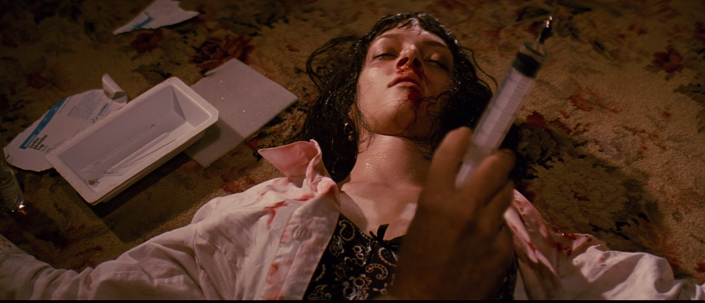

Postmodern Deconstruction of Pulp Fiction
1. Subversion of Narrative Structure

Postmodern Lens: Tarantino fractures the timeline into seven vignettes, rejecting:
- Traditional three-act structure
- Causality (Vincent dies mid-film, yet appears later)
- Heroic character arcs
Psychological Reading: The film reflects characters’ fragmented identities, where memory and morality shift across context. Jules’ "redemption" is less transformation than performance.
2. The Briefcase as Hyperreal Symbol

Baudrillard’s Theory: The glowing briefcase is a simulacrum—a representation without an original. We never know what's inside, so we project meaning onto it.
- Critique of materialism
- Commentary on Hollywood spectacle
- Audience complicity in constructing narrative
3. Fast Food & Cultural Nihilism

Marxist Lens: The film mocks 1990s capitalism:
- Nostalgia as a luxury product
- Class contrast (Mia vs. Honey Bunny)
- Consumption as identity
Modern Parallel: Influencer culture reflects the same surface-driven world where meaning is aestheticized and transactional.
4. Intertextual Mashup & Cultural Blurring

Intertextuality: Tarantino remixes high and low culture:
- Godard reference: Dance scene from Bande à Part
- Pop culture: McDonald’s “Royale with Cheese” scene
- Meta-casting: Bruce Willis parodies his own action hero trope
Postmodernism: Collage culture—no original ideas, just recycled media, cut-up and reframed.
5. Gender, Performance & Existential Drift
Feminist Lens: Mia Wallace is a stylized femme fatale—defined more by aesthetics than agency. Her overdose becomes an entertainment scene, mirroring how media trivializes women’s trauma.
Existential Lens: Characters act on impulse. Meaning is invented moment to moment. There are no moral frameworks—just vibes, violence, and survival.
6. Speaking Through Culture
Counterparts:
- 🎵 Beck’s “Loser” – ironic, disconnected, self-aware slacker anthem
- 📺 *The Simpsons* – parody as critique; early postmodern satire
- 📹 Modern memes – often absurd, out-of-context, and ironic like Tarantino’s structure
These reflect a shared desire to laugh through nihilism and remix culture into new meanings.
7. Tropes of Postmodernism in the Film
- 🧩 Fragmentation of time and identity
- 🌀 Hyperreality and media simulacra
- 🎭 Irony and moral relativism
- 🎞 Intertextuality and pastiche
- ⚠️ Deconstruction of genre, masculinity, and narrative itself
In Sum: Pulp Fiction doesn’t offer answers—it breaks things apart and lets you pick up the pieces.